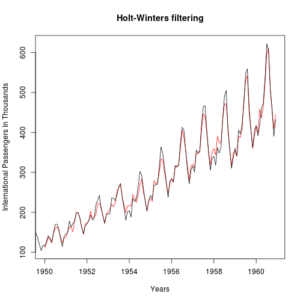

Capacity Planning Using Air Traffic Prediction
treadrightly
Business Case For Predicting Air Traffic
- International airline passengers are continuously increasing
- Costs associated with international travel are also increasing - e.g., airplanes, personnel, supplies etc.
- Airline traffic follows seasonal patterns and trends
- Modeling this seasonality allows better cost management
- Variable costs such as personnel, perishable food products etc. can be reduced at periods of low activity
- We need a top-of-the-line tool to help us predict future air traffic that incorporates previously observed trend and seasonality
- The ability to predict future traffic will help in capacity planning and improve the company's bottom line
Supporting Information - Box & Jenkins Airline Data

Application For Predicting Air Passengers
- Air Traffic Prediction Tool
- Fits a HoltWinters model to the time series data collected by Box & Jenkins
- Allows the user to choose the number of periods to be forecasted
- Also allows the user to choose the confidence level of the forecast
- The dimensions of the output graph can be changed to allow the graph to be used in other presentations
Future Enhancements
- The first iteration of the prediction tool uses univariate time series modeling
- Future iterations will be multivariate, including expected economic trends and other factors affecting airline traffic
- Exporting graphs to files directly will be supported by future versions the application